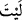

O kul gelir, safların arasına girer, babasından annesinden, sonra arkadaşlarından
ister. Her birine kendi durumuna göre ihtiyacını söyler. Fakat hiç biri olumlu cevap
vermez. Hepsi: “Bugün ben de bir haseneye muhtacım.” der. Kul geldiği yere döner.
Hak Sübhânehû ve Teâlâ ona sorar ve: “Ne getirdin?” buyurur. O da: “Ya Rabbi!
Hiç kimse hasenatından bir hasene vermedi.” der. Allah Teâlâ: “Kulum, senin benim
için edindiğin bir dostunda mı yoktu?” buyurur. Bunun üzerine kul, bir dostunu
hatırlar ve “Falanca benim dostumdu.” der. Hak Teâlâ onu arkadaşına ulaştırır.
Onun yanına varıp kendi durumuna göre onunla konuşur. Arkadaşı: “Evet, benim
ibâdetim çok. Sen onları benden kabul et. Onları sana bağışladım.” der.” Kul sevinir
ve önceki yerine gelir ve olanları Rabbi’ne haber verir. Allah Teâlâ da: “Kabul ettim.
Onun hakkından da bir şey eksiltmedim. Seni de onu da affettim.” buyurur.”
İşte bu, Allah için dostluğun iki dünyada da îtibarının büyüklüğüne ve faydasının
çokluğuna işaret eder. Bir hadîste şöyle buyrulmuştur: “Bir kimse cennette bir dostunu
hatırlar ve: “Falan arkadaşım ne yaptı acaba?” der. Arkadaşı ise cehennemdedir.
Bunun üzerine Allah Teâlâ: “Onun hatırına arkadaşını da cennete çıkarın.” Yani, onu
ona bağışladım.” buyurur.”[15]
Hasan Basrî (k.s.) der ki: “Mü’min dostlarınızı çoğaltın. Çünkü onların kıyamet
gününde şefâat hakları vardır.” Yine o şöyle demiştir: Allah’ın zikri için bir topluluk bir
yerde toplanır, aralarında ehl-i cennetten bir kul da bulunursa, onlara o kul şefaat eder.
Ehl-i îman birbirlerinin şefaatçısıdırlar. Onlar Allah huzurunda şefaat ederler, şefaatları
da makbuldür.”
Bir hadîste şöyle buyrulmuştur: “İnsanlar kıyamet gününde sırat köprüsüne
uğrarlar. Sırat yumuşak ve kaygandır; üzerindekilerini tersine çevirir. Altındaki ateş
de onlardan alacağını alır. Çünkü cehennem, onların üzerine karın yağdığı gibi
yağar. Üstlerine düşünce inim inim inlerler ve şiddetle nefes alıp verirler. Onlar bu
halde iken Rahman’dan şöyle bir nidâ gelir: “Kullarım, siz kime ibâdet
ediyordunuz?” Onlar: “Rabbimiz, sen biliyorsun ki, biz sana ibadet ederdik.” derler.
Allah Teâlâ da, mahlûkatın benzerini asla duymadığı bir sesle onlara şöyle cevab
verir: “Kullarım, bugün kendimden başka kimseye sizi bırakmamak benim üzerimde
bir haktır. Sizi bağışladım ve sizden razı oldum.” Bunun üzerine melekler kalkıp
şefaat ederler. Böylece onlar buradan kurtulurlar. Onların altında cehennemde
olanlar: “Şimdi artık bizim ne şefaatçilerimiz var. Ne de yakın bir dostumuz.”
derler.”[16]
102. Ah keşke bizim için (dünyaya) bir dönüş daha olsa da, müminlerden olsak!
“Ah keşke bizim için (dünyaya) bir dönüş daha olsa da” “ ” temenni edatıdır, “
”